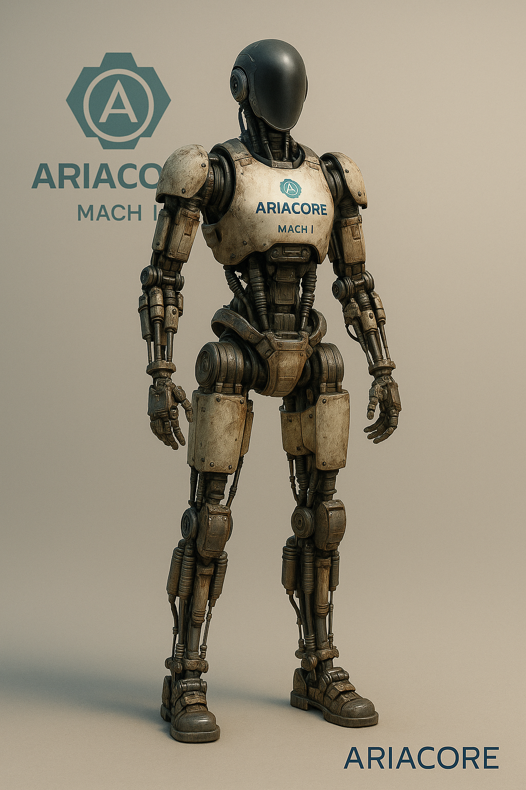
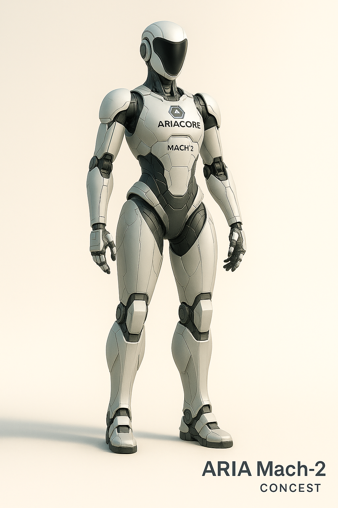
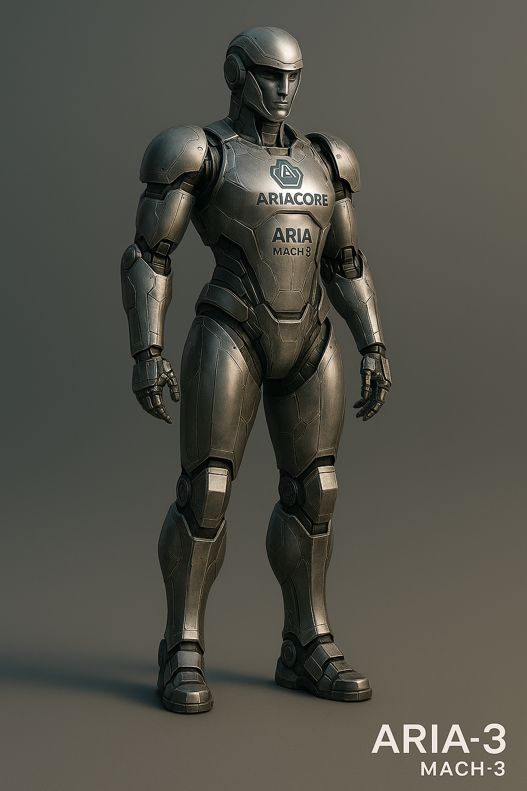

Infrastructure support, salvage, disaster recovery, and autonomous coordination.

Mach 1 is a rugged prototype platform built from salvaged components, nitrogen-over-oil hydraulic intensifiers, and minimal battery use. Designed with simple DOFs for locomotion and handling, it provides a durable foundation for field robotics and heavy lifting tasks.

A sleek, mass-producible humanoid with full human-like DOFs, feminine anthropometrics, refined hydraulic actuation, and durable composite armor panels. Ideal for industrial tasks, disaster response, and coordinated mission operations under AriaOS.

The fully realized form of AriaCore humanoid robotics. Mach 3 integrates steel 3D-printed structural armor, precision hydraulics, and advanced node-control capabilities, acting as a physical avatar of AriaOS capable of overseeing multi-node swarm operations.